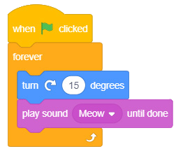
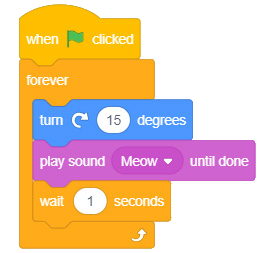

Activity 7: Using a forever loop in a program
Create a program that makes the sprite turn 15 degrees to the right while playing a sound in the background forever.
Steps
-
1.
From the Event block, choose the when green flag clicked block.
-
2.
From the Control block, choose the forever block.
-
3.
Add the code to turn the sprite 15 degrees right inside the body of the forever block. To do that, choose the turn right ( ) block from the Motion block, then add 15 in the brackets of the block. In addition, choose the play sound ( ) until done from the Sound block and add a sound of your choice.
-
4.
Start the program by clicking the green flag. You will observe that the sprite will turn 15 degrees to the right continuously while the sound is playing. Observe Figure 9 (a).
-
5.
Add a wait (1) seconds block to clearly observe how the sprite turns 15 degrees right. Observe Figure 9 (b).
Code blocks


Figure 9: Forever loop in a program